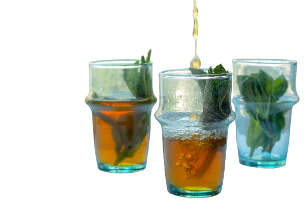

The Traditional Moroccan Tea

Moroccan traditional tea, often called atay, is more than just a drink it is a symbol of hospitality, culture, and everyday life. Prepared with green tea, fresh mint, and generous amounts of sugar, it brings together a perfect balance of sweetness and freshness. From bustling cities to quiet villages, tea is served throughout the day, welcoming guests and strengthening social bonds.
The preparation of Moroccan tea is an art passed down through generations. The tea is carefully brewed, rinsed, and then mixed with mint leaves and sugar before being poured from a height into small glasses. This pouring technique is not only visually elegant but also helps to aerate the tea, enhancing its flavor and creating its signature light foam on top.
Sharing tea is a deeply rooted tradition in Morocco. It is common to serve three glasses, each with a slightly different taste, often described as bitter like life, sweet like love, and gentle like death. Whether among family, friends, or even strangers, offering tea is a gesture of respect, warmth, and connection.
Today, Moroccan tea continues to evolve while preserving its heritage. It can be enjoyed in modern cafés, at home, or during special celebrations, sometimes infused with herbs like sage or verbena for a unique twist. Despite these variations, the essence of Moroccan tea remains unchanged a timeless ritual that brings people together and celebrates the richness of Moroccan culture.
Want to learn more ...